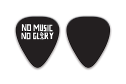
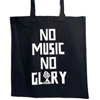
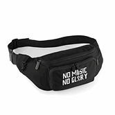
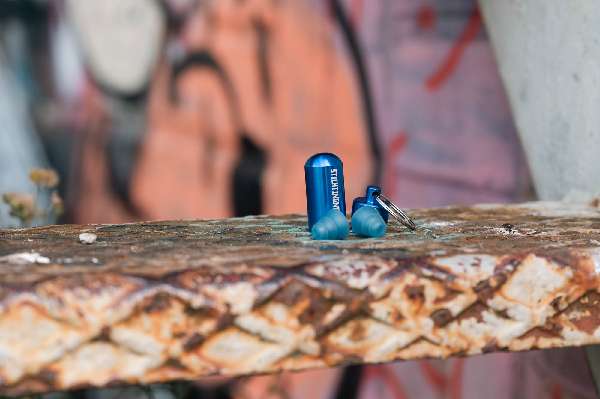
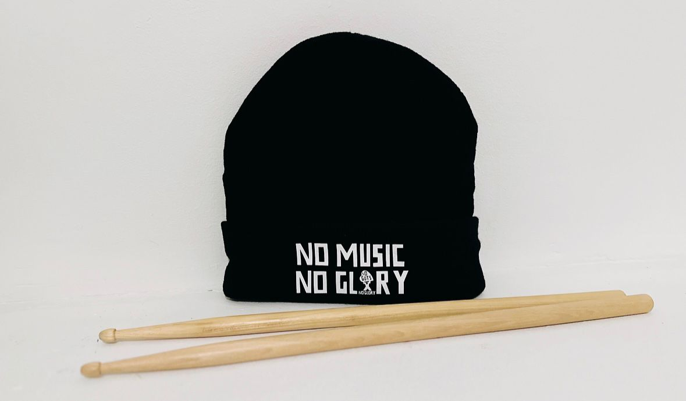
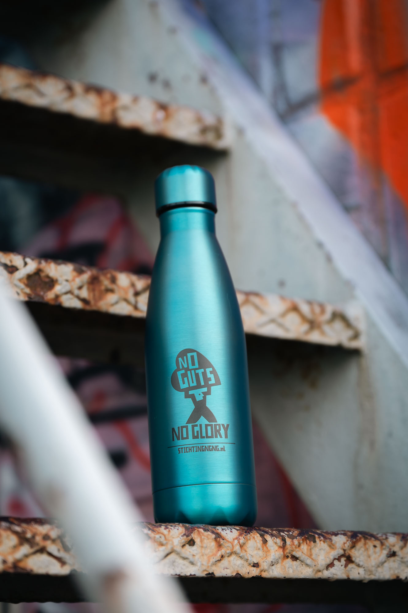

Steun Ons
Doneer vandaag nog en help ons om wensen waar te maken.
Elke euro brengt iemand met kanker en hun
naasten
dichter bij
een moment van kracht, troost en muziek
1 Donatie
2 Gegevens
3 Betaling
€5
€10
€25
€50
VOLGENDE
Dank voor je steun, het maakt het verschil ❤️
Producten
NGNG Plectrum- €10,00
NGNG Tas- €12,50
NGNG Fanny Pack- €29,50



NGNG Gehoorbescherming- €15,00
NGNG Beanie- €20,00
NGNG Thermosfles- €20,00



Reviews
⭐️⭐️⭐️⭐️⭐️
"Het NGNG-t-shirt zit niet alleen
superlekker, maar voelt ook als
een statement. Ik draag het met
trots en krijg er vaak vragen
over. Mooie manier om steun te
laten zien." - Sanne (29)
"Het NGNG-t-shirt zit niet alleen
superlekker, maar voelt ook als
een statement. Ik draag het met
trots en krijg er vaak vragen
over. Mooie manier om steun te
laten zien." - Sanne (29)
⭐️⭐️⭐️⭐️⭐️
"De thermosfles met het No Guts
No Glory-logo is mijn favoriete
thermosfles geworden. Elke dag
herinnert hij me eraan dat muziek
en steun onmisbaar zijn." - Fatima
(34)
"De thermosfles met het No Guts
No Glory-logo is mijn favoriete
thermosfles geworden. Elke dag
herinnert hij me eraan dat muziek
en steun onmisbaar zijn." - Fatima
(34)
⭐️⭐️⭐️⭐️⭐️
"De beanie is niet alleen tof,
maar ook echt goede kwaliteit.
Perfect voor op festivals en in de
winter. Ik ben fan!" - Kim (31)
"De beanie is niet alleen tof,
maar ook echt goede kwaliteit.
Perfect voor op festivals en in de
winter. Ik ben fan!" - Kim (31)
Contact
Gmail- info@stichtingngng.nl
Locatie- Ons kantoor en muziekhuis is gevestigd op
de Arubastraat 1, 1058 VD in Amsterdam.
Locatie- Ons kantoor en muziekhuis is gevestigd op
de Arubastraat 1, 1058 VD in Amsterdam.
Volg ons op